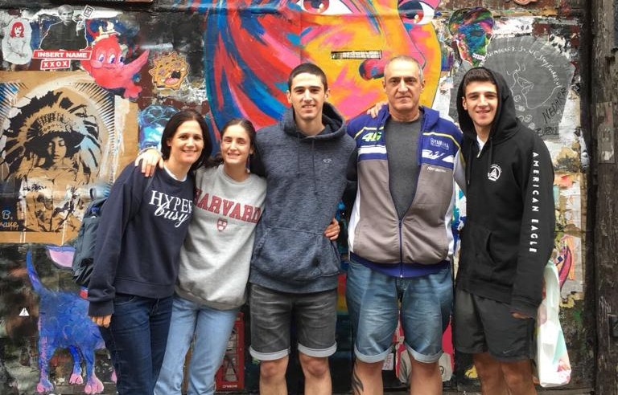

My name is Tal Barda, i'm 23 years old and living in Kfar Azar, Ramat gan with my family. I have 2 younger siblings, Shahar and Maya. We also have a dog, named Luka. It is a Malinois (kind of Belgian Shepherd) and 1 and a half years old.
When I was younger I studied in elementary school im Ramat Efal, the neighborhood I used to live in. Later on, I went to Blich high school in Ramat Gan and took Physics as my major class. I graduated at June 2016.
On September '20 I started first degree in computer science on Reichman University and today I'm a second year student.

Schools websited's links
When I was in high school, I used to work every year as a guide in a summer day camp in my neighborhood. I worked there every summer from when I was 14 to 18 years old. After the day camp was over in 2016, I spent the months I had before I recruited to the IDF by working at the juice store "Rebar".
In December 2016 I recruited to the IDF and served as NBC (nuclear, biologic, chemical) guide in the Home front command. I used to travel between basic training camps and taught recruit soldier this subject. on July 2017, I started officers course and ended it on February 2018, where I got the platoon leader ("Sagam") rank.
As an officer in the army I did two roles. In the first year and a half I was a training officer, and I worked on planing the calendar for all of the home front command trainings, starts with Search and rescue brigade, and even cooperation with the police, the fire department and with Israel Prison Service. At my last year in the army I handled preparedness of the local authority to emergency. As well, I worked on characterization of the systems that the authorities are using today at emergency. I finished my military service at August 2020 as First lieutenant ("Segen") and I'm still doing "Miluim" service in the unit I served in my second role as officer.